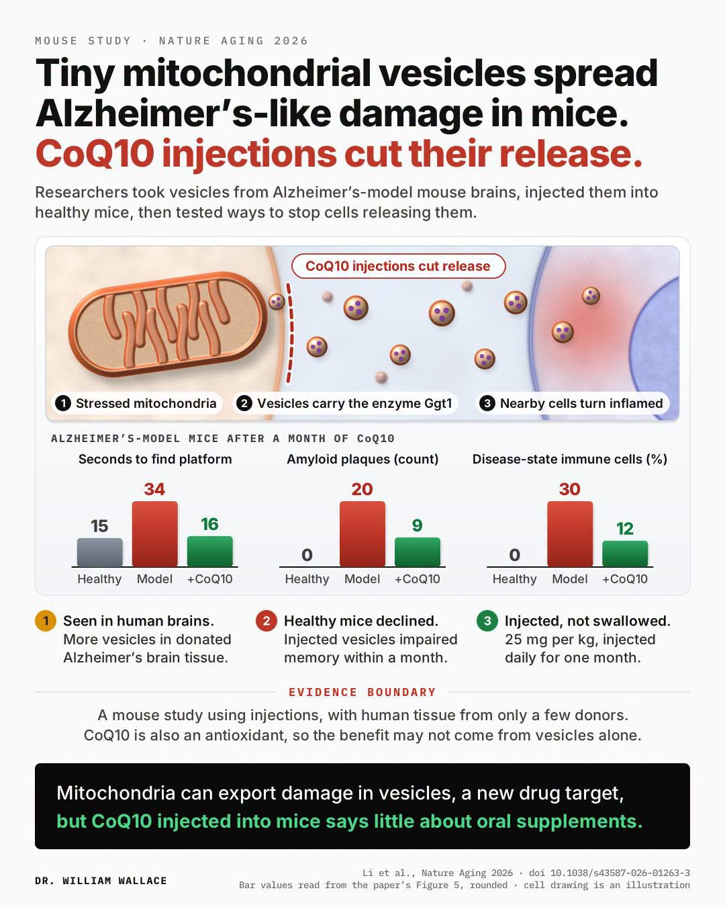

This is a fascinating mouse study that suggests CoQ10 might target one of the mitochondrial-based mechanisms by which Alzheimer’s progresses, especially in its earlier stages.
Link to journal paper:
Paper · Nat Aging · 2026Mitochondria-derived extracellular vesicles mediate Alzheimer’s disease pathology through transmitting microglial Ggt1nature.com
It has been clear for a while now that mitochondrial dysfunction plays a major role in the etiology of Alzheimer’s, and figuring out why this happens and how to intervene is a priority.
Clinical trials with CoQ10 in Alzheimer’s have been mostly disappointing. But that does not preclude the possibility that it may still be useful as a preventative, if applied very early on when there may still be time to stop or even reverse the progression of the disease.
These mouse studies don’t tell us whether or not something actually works in humans. But they do tell us a lot about possible mechanisms, which helps us to understand how diseases actually work at the most fundamental level.
#coq10HD #alzheimersHD #miceHD
Tiny packages released by stressed mitochondria can spread Alzheimer's-like damage from one brain cell to another in mice, and injected CoQ10 reduced how many of those packages were sent out.
Mitochondria are the parts of a cell that make energy, and their failure has long been part of the Alzheimer's story. CoQ10 sits in that energy chain and also acts as an antioxidant, which is why it has been tested as a treatment. In a 16-week randomized trial of 78 people with mild to moderate Alzheimer's, 1,200 mg a day of oral CoQ10 was safe but did not change spinal-fluid markers of amyloid, tau, or oxidative stress, and thinking scores moved no differently than they did on placebo. The authors concluded that this dose did not support moving CoQ10 into larger Alzheimer's trials.
The new Nature Aging study is about a more specific mechanism. Researchers isolated mitochondria-derived vesicles from the brains of Alzheimer's-model mice, injected them into healthy mice, and found that this was enough to impair memory within a month. The same kind of vesicles were present at higher levels in donated human Alzheimer's brain tissue. In the mice, daily CoQ10 injections for a month cut how many vesicles were released. Healthy mice found a water-maze platform in about 15 seconds, the Alzheimer's-model mice took 34 seconds, and model mice given CoQ10 took 16. Amyloid plaque counts were 0, 20, and 9, and the share of immune cells in a disease-related state was 0, 30, and 12 percent.
This remains a mouse study, the human tissue came from only a small number of donors, and the CoQ10 was injected at 25 mg per kilogram a day, not swallowed as a supplement. CoQ10 is also an antioxidant, so the benefit may not come from the vesicles alone. The work points to a new way damaged mitochondria might spread injury, and to a possible drug target. It is not evidence that oral CoQ10 supplements treat or prevent Alzheimer's disease in people.
Sources: Li et al., Nature Aging, 2026; Galasko et al., Archives of Neurology, 2012.
